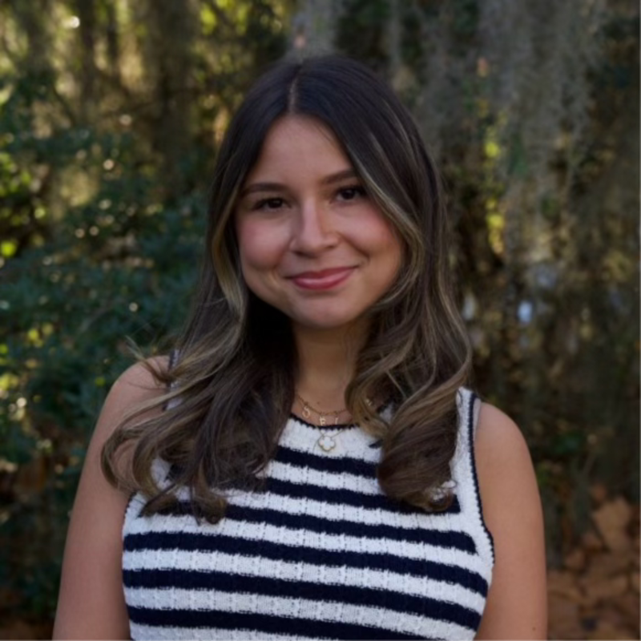

01
Newsroom leadershipAug 2026 — Present
Senior News Director
The Independent Florida Alligator · Gainesville, FL
Recruit and coach 10 reporters, guide their growth in sourcing and storytelling, and bring alumni and media voices into the newsroom.
Writer · Editor · Visual storyteller
I’m Sofia Meyers — a University of Florida journalism student drawn to the people, details, and ideas that make a story stay with you.

I’m pursuing a Bachelor of Science in Journalism with a concentration in Business Administration at the University of Florida. I’ve found my place in the details: asking one more question, making a complicated issue clearer, or helping a new reporter find their voice.
At The Independent Florida Alligator, I’ve worked from University Desk reporter to editor to Senior News Director. At WUFT, I translate newsroom reporting into visual stories for social. In the classroom, I help future journalists build confidence in their reporting.
A little more about how I workEach role has added a new way to listen, shape a story, and help it find its audience.
The Independent Florida Alligator · Gainesville, FL
Recruit and coach 10 reporters, guide their growth in sourcing and storytelling, and bring alumni and media voices into the newsroom.
WUFT · Gainesville, FL
Turn newsroom reporting into Instagram graphics and captions, pairing story photography with a consistent visual voice.
University of Florida · Gainesville, FL
Support 30 students in weekly reporting labs and review their stories for clarity, accuracy, and journalistic standards.
The Independent Florida Alligator · Gainesville, FL
Managed and mentored a team of five reporters, editing stories for clarity, precision, and publication standards.
Boucher Brothers · Miami, FL
Collaborated on social content strategy and pitched seasonal campaigns using Canva, Instagram Insights, and content calendars.
The Independent Florida Alligator · Gainesville, FL
Wrote 10+ long-form stories about UF, covered breaking news, and interviewed more than 20 community members.
No roles in this category yet.
On the page, in a conversation, or between the scrolls — I care about meeting people with clarity and a point of view.
Ask better questions, seek out perspectives, and take the time to understand what matters to the people in a story.
Untangle the complicated parts without losing the details that give a story its meaning.
Bring reporting to life with thoughtful editing, strong visuals, and a format that fits its audience.
The next story starts here
For a conversation, a collaboration, or just to say hello — my inbox is open.